Atelier de peinture
Muriel Oberlé
Les toiles passent devant
Ateliers pour enfants et adolescents, cours pour adultes, en groupe ou en particulier. Toutes les images de cette page sont des photographies de l’atelier. Aucune n’a été fabriquée.
Demander une place Neuf chapitres. Le folio, à gauche, dit où vous en êtes.
Chapitre un
Le mercredi, la table est déjà couverte
Pas de feuille distribuée, pas de modèle au tableau. Une nappe de papier court d’un bout à l’autre, et on peut commencer n’importe où dessus.
Ils arrivent après l’école et posent leur cartable. Ce qui est déjà sur la nappe a été commencé par quelqu’un d’autre, la semaine d’avant ou dix minutes plus tôt. On s’installe dans un espace libre, on regarde ce qu’il y a autour, et on continue.
C’est un dessin collectif que personne ne dirige. Il n’a pas de sujet, pas de sens de lecture, et il n’est jamais fini.
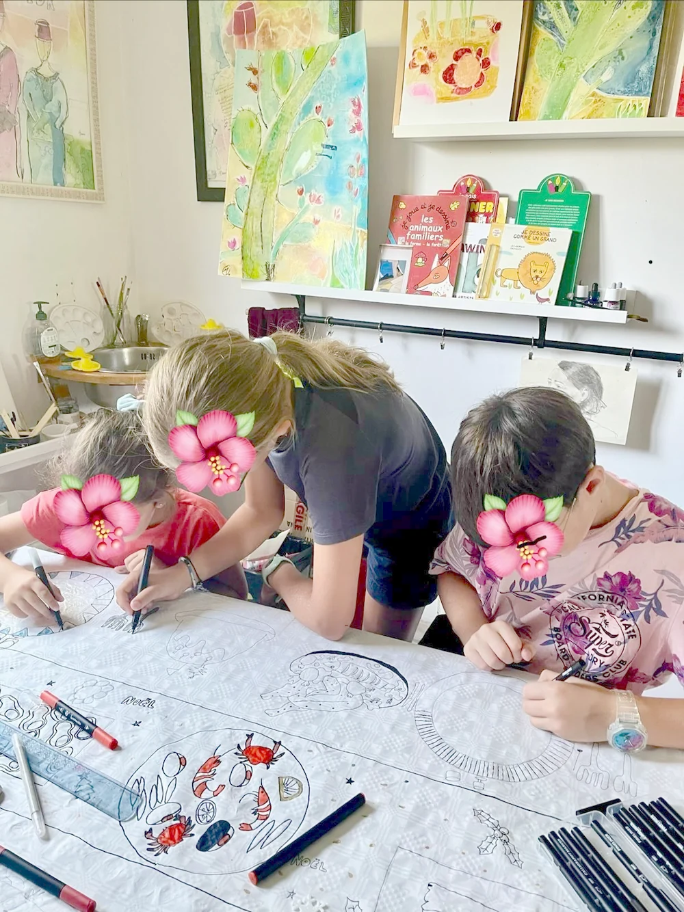
Les feutres restent au milieu. Personne n’a sa trousse, et c’est volontaire : le matériel appartient à la table, pas à celui qui s’assied devant.
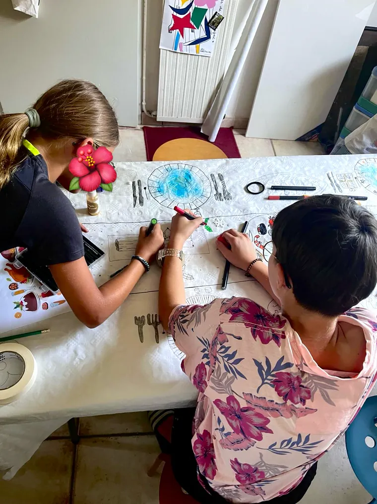
Chapitre deux
On ne commence pas par apprendre à dessiner
C’est la première inquiétude des parents, et elle est légitime : mon enfant ne sait pas dessiner. La réponse tient en une phrase. On ne commence pas par là.
On commence par regarder. Par poser une couleur à côté d’une autre pour voir ce que ça fait. Par se tromper sur un papier qui ne coûte rien, et recommencer à côté. Le trait juste arrive après, et il arrive à tout le monde.
Ce qui s’apprend d’abord, c’est de rester devant quelque chose plus de trois minutes.
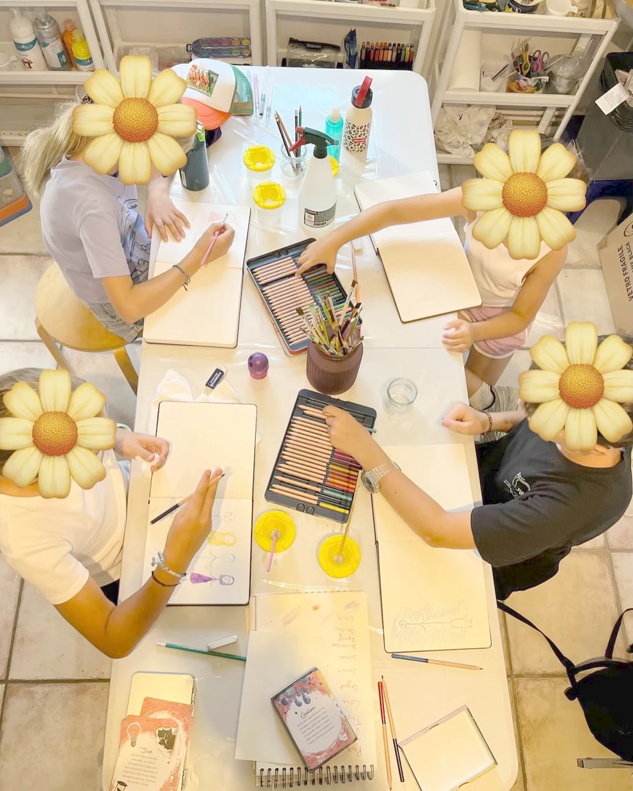
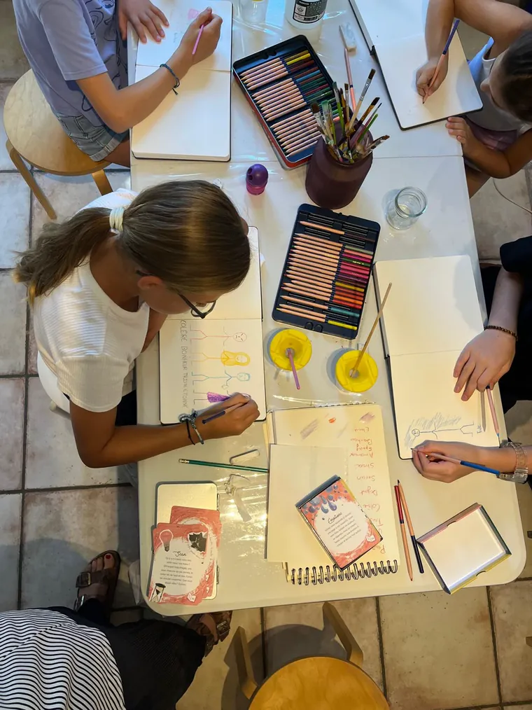
Chapitre trois
Le vrai objet, c’est le carnet
Il se remplit semaine après semaine, il part à la maison, il revient. Deux pages du même carnet.
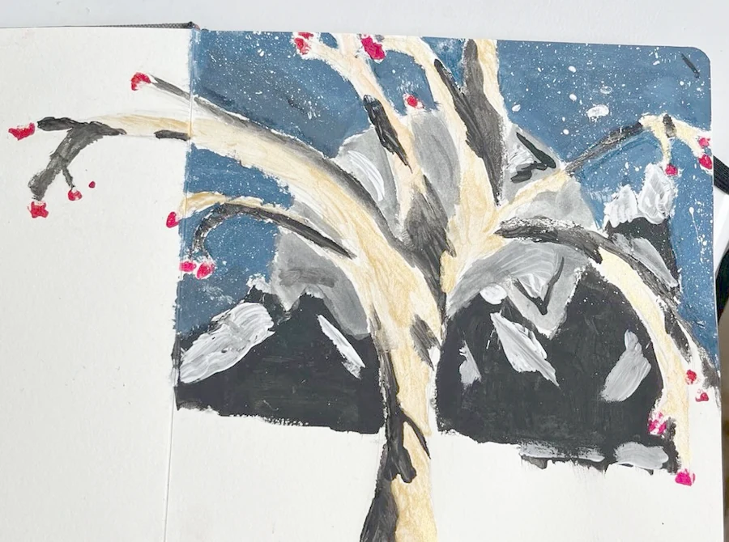

Un carnet ne se corrige pas. On tourne la page et on refait à côté, et c’est en tournant les pages, six mois plus tard, qu’on voit ce qui a changé.
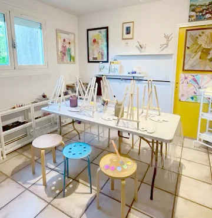
La salle est dressée avant. Les chevalets sont sortis, les palettes posées, l’eau est propre. Il ne manque que ceux qui vont s’asseoir.
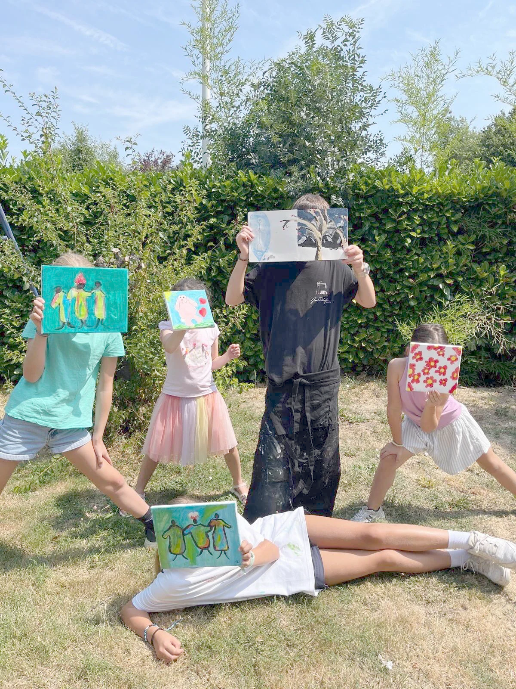
Chapitre cinq
Les toiles passent devant
Le dernier jour, les toiles sortent dans le jardin. Chacun tient la sienne devant soi. Le tableau passe devant l’enfant, et c’est à peu près tout ce qu’il y a à comprendre de cet atelier.
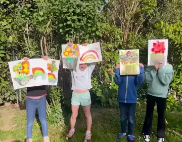
Chapitre six
Et les grands
L’atelier ne s’arrête pas à l’adolescence. Les cours pour adultes ne fonctionnent pas autrement : on regarde, on essaie, on recommence.
En groupe ou en particulier, selon ce qu’on cherche. En groupe, on avance à côté d’autres gens et on voit passer leurs solutions. En particulier, on travaille sur ce qui bloque, et uniquement sur ça.
Muriel Oberlé peint et expose. Sa grand-mère et plusieurs de ses tantes étaient artistes, et c’est à leur contact qu’elle a développé son sens de la couleur et des nuances.
Source : « Muriel Oberlé : les voyages forment la genèse », La Dépêche du Midi, 8 novembre 2005.
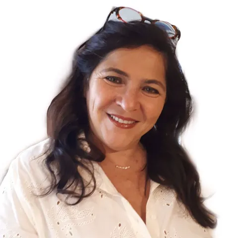
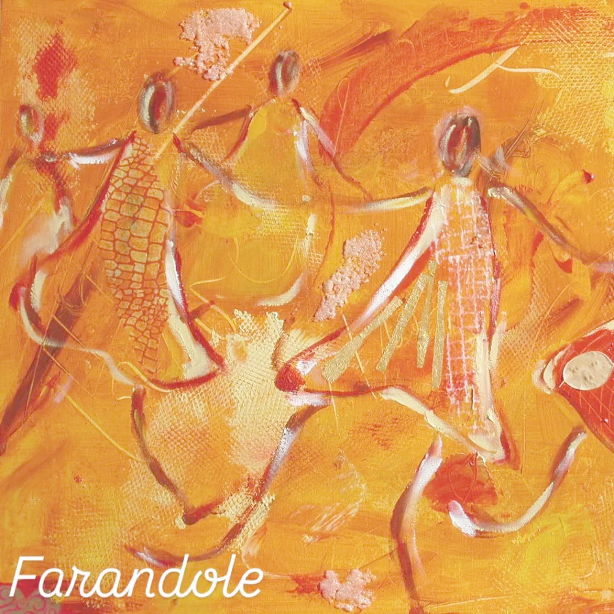
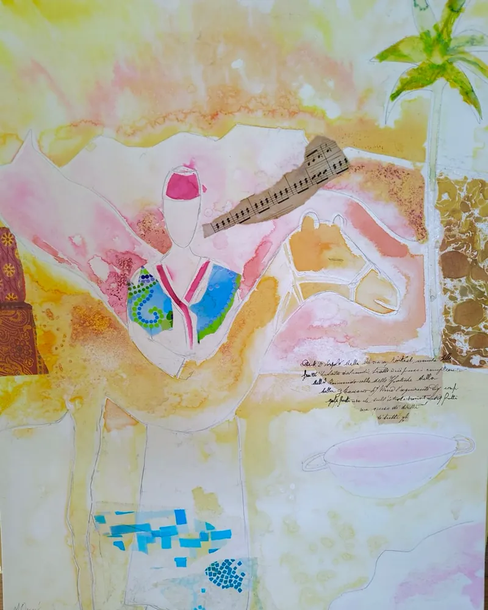
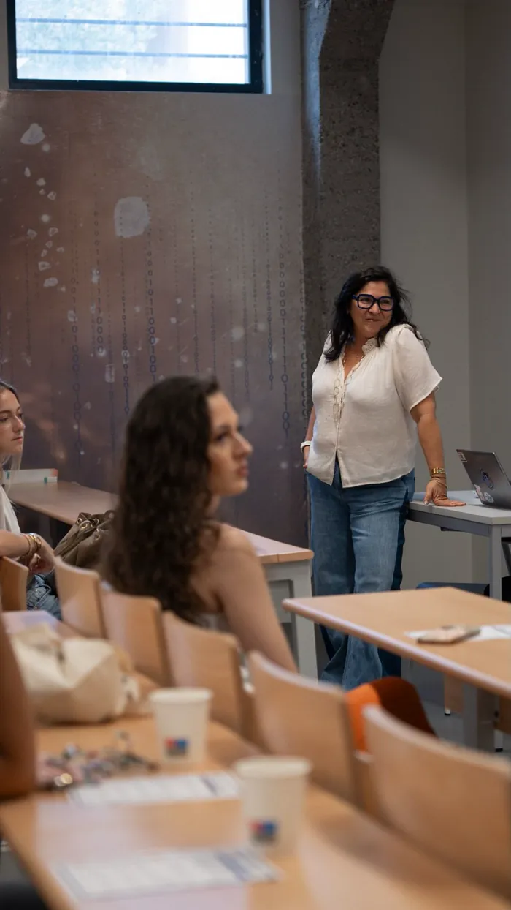
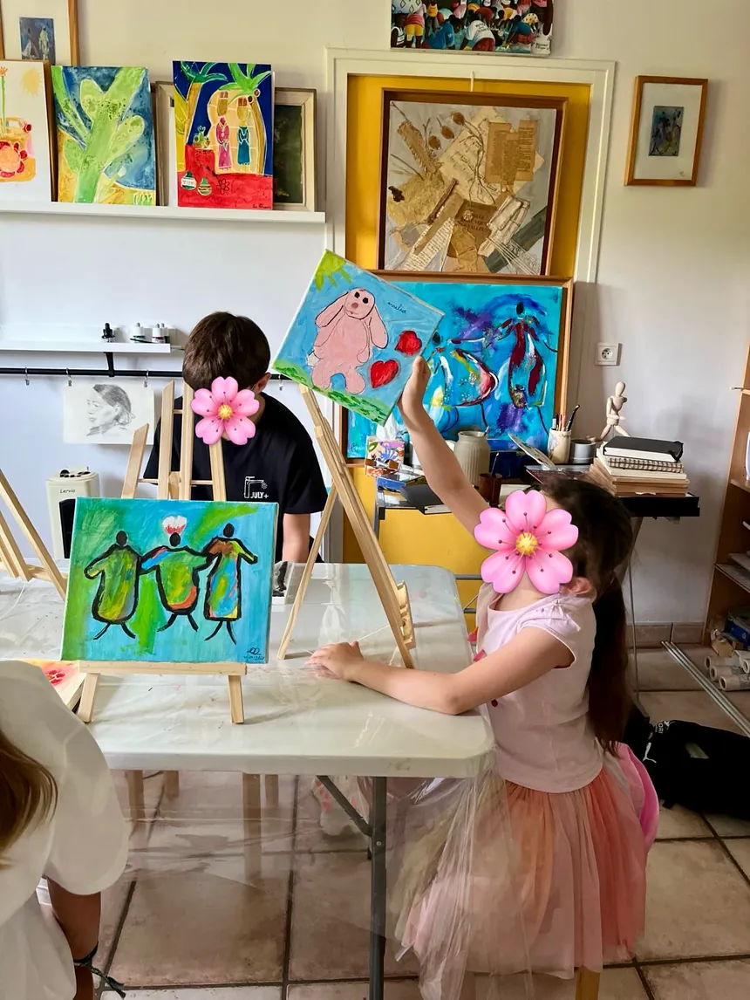
Chapitre sept
Les ateliers
Enfants, dès 8 ans
En petit groupe, après l’école. Dessin, gouache, aquarelle, et le carnet qui suit toute l’année. Jour et horaire à compléter.
Adolescents
Même atelier, autres exigences. On travaille la matière et le format, et on garde le carnet. Jour et horaire à compléter.
Adultes, en groupe
Débutants compris, sans condition d’entrée. Jour, horaire et tarif à compléter.
Cours particulier
Adultes et adolescents, sur un projet précis ou sur une difficulté précise. Durée et tarif à compléter.
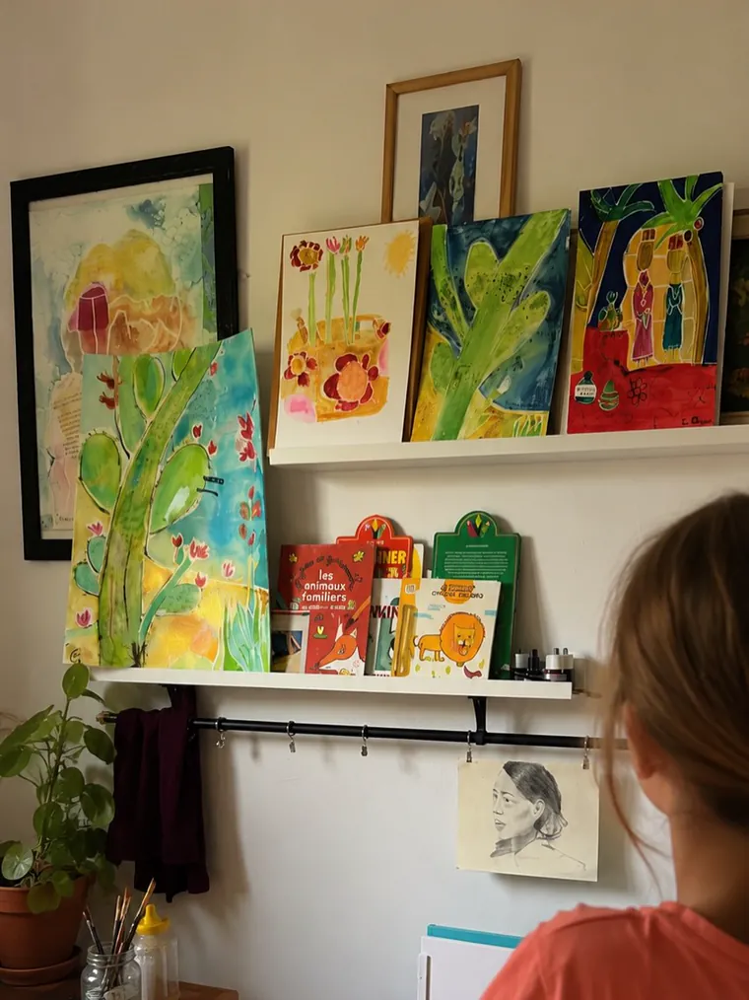
Colophon
Muriel Oberlé
Pour une place, écrivez à Muriel. Dites qui vient, quel âge, et quand vous êtes disponibles. Elle répond en vous disant s’il reste de la place, et sur quel créneau.
Atelier : adresse à compléter. Téléphone : à compléter. Sur Instagram : murieloberle.studio.
Les treize photographies et les deux vidéos de cette page ont été prises à l’atelier et fournies par Muriel Oberlé. Aucune image n’a été générée. Les visages des enfants sont masqués par elle, ou cachés par les toiles elles-mêmes : aucun n’a été reconstruit.
Mentions légales à compléter.